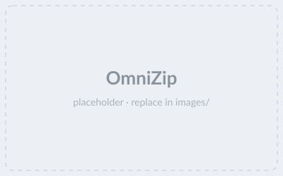

Filter by keyword
|

|
OmniZip: Audio-Guided Dynamic Token Compression for Fast Omnimodal Large Language Models
Keda Tao,
Kele Shao,
Bohan Yu, Weiqiang Wang, Jian Liu,
Huan Wang#
(#: Corresponding Author)
In CVPR, 2026 |
 ArXiv |
ArXiv |
 Code
Code
Token CompressionMultimodal LLMEfficient AI
|
|
|
StreamingTOM: Streaming Token Compression for Efficient Video Understanding
Xueyi Chen,
Keda Tao,
Kele Shao,
Huan Wang#
(#: Corresponding Author)
In CVPR, 2026 |
ArXiv |
Code |
 Webpage
Webpage
Token CompressionMultimodal LLMVideoEfficient AI
|

|
Can MLLMs Guide Me Home? A Benchmark Study on
Fine-Grained Visual Reasoning from Transit Maps
Sicheng Feng*,
Song Wang*,
Shuyi Ouyang,
Lingdong Kong,
Zikai Song,
Jianke Zhu,
Huan Wang#,
Xinchao Wang
(*: Equal Contribution, #: Corresponding Author)
In CVPR, 2026 |
ArXiv |
Webpage | Code
BenchmarkMultimodal LLMAI Evaluation |

|
When Tokens Talk Too Much: A Survey of Multimodal
Long-Context Token Compression across Images, Videos, and Audios
Kele Shao*,
Keda Tao*,
Kejia Zhang,
Sicheng Feng,
Mu Cai,
Yuzhang Shang,
Haoxuan You,
Can Qin,
Yang Sui,
Huan Wang
(*: Equal Contribution)
TMLR, January 2026 |
ArXiv |
Paper GitHub Repo
Token CompressionMultimodal LLMSurveyEfficient AI |

|
FreqExit: Frequency-Aware Early Exit for
Visual Autoregressive Models
Ying Li,
Chengfei Lv,
Huan Wang
In NeurIPS, 2025 |
 OpenReview |
Code |
Webpage
OpenReview |
Code |
Webpage
Generative ModelsEfficient AI |

|
HoliTom: Holistic Token Merging for Fast Video
Large Language Models
Kele Shao,
Keda Tao,
Can Qin,
Haoxuan You,
Yang Sui,
Huan Wang
In NeurIPS, 2025 |
ArXiv |
Code
Token CompressionMultimodal LLMVideoEfficient AI |

|
Poison as Cure: Visual Noise for
Mitigating Object Hallucinations in LVMs
Kejia Zhang,
Keda Tao,
Jiasheng Tang,
Huan Wang
In NeurIPS, 2025 |
ArXiv |
Code
Multimodal LLMAI Evaluation |

|
Individual Content and Motion Dynamics Preserved Pruning
for Video Diffusion Models
Yiming Wu,
Zhenghao Chen,
Huan Wang,
Dong Xu
In ACM MM, 2025 |
ArXiv
Network PruningGenerative ModelsVideoEfficient AI |

|
On-Device Diffusion Transformer Policy for Efficient
Robot Manipulation
Yiming Wu,
Huan Wang#,
Zhenghao Chen,
Jianxin Pan,
Dong Xu#
(#: Corresponding Author)
In ICCV, 2025 |
ArXiv
Generative ModelsRoboticsOn-DeviceEfficient AI |

|
DyCoke: Dynamic Compression of Tokens for Fast Video
Large Language Models
Keda Tao,
Can Qin,
Haoxuan You,
Yang Sui,
Huan Wang#
(#: Corresponding Author)
In CVPR, 2025 |
ArXiv |
Code
Token CompressionMultimodal LLMVideoEfficient AI |

|
Accessing Vision Foundation Models via
ImageNet-1K
Yitian Zhang,
Xu Ma,
Yue Bai,
Huan Wang#,
Yun Fu
(#: Corresponding Author)
In ICLR, 2025 |
ArXiv |
Code
Knowledge DistillationEfficient AI |

|
Is Oracle Pruning the True Oracle?
Sicheng Feng,
Keda Tao,
Huan Wang
Preprint, 2024 |
Webpage |
ArXiv |
Code
Network PruningAI EvaluationBenchmark |

|
Towards Real-time Video Compressive Sensing on Mobile
Devices
Miao Cao, Lishun
Wang, Huan Wang#, Guoqing Wang, Xin
Yuan#
(#: Corresponding Author)
In ACM MM, 2024 |
ArXiv |
Code
On-DeviceVideoEfficient AI |

|
A Simple Low-bit Quantization Framework for Video Snapshot
Compressive Imaging
Miao Cao,
Lishun Wang, Huan Wang, Xin
Yuan
In ECCV (Oral, 200/8585=2.3%), 2024 |
Arxiv |
Code
QuantizationVideoEfficient AI |

|
Don't Judge by the Look: A Motion Coherent Augmentation
for Video Recognition
Yitian Zhang, Yue Bai,
Huan Wang, Yizhou Wang, Yun Fu
In ICLR, 2024 |
ArXiv |
Code
VideoData Augmentation |

|
SnapFusion: Text-to-Image Diffusion Model on Mobile
Devices within Two Seconds
Yanyu Li*,
Huan Wang*,
Qing Jin*,
Ju Hu,
Pavlo Chemerys,
Yun Fu,
Yanzhi Wang,
Sergey Tulyakov,
Jian Ren*
(*: Equal Contribution)
In NeurIPS, 2023 |
ArXiv |
Webpage
Generative ModelsOn-DeviceEfficient AI |

|
Iterative Soft Shrinkage Learning for Efficient Image
Super-Resolution
Jiamian
Wang, Huan Wang, Yulun
Zhang, Yun
Fu, Zhiqiang Tao
In ICCV, 2023 |
Arxiv |
Code
Network PruningSuper-ResolutionEfficient AI |

|
Why is the State of
Neural Network Pruning so Confusing? On the Fairness, Comparison Setup, and Trainability in
Network Pruning
Huan Wang, Can Qin, Yue Bai, Yun Fu
Preprint, 2023 |
ArXiv |
Code
Network PruningAI EvaluationBenchmark |

|
Global Aligned Structured Sparsity
Learning for Efficient Image Super-Resolution
Huan Wang*, Yulun
Zhang*, Can Qin, Luc Van Gool, Yun Fu
(*: Equal Contribution)
TPAMI, 2023 |
PDF |
Code
Network PruningSuper-ResolutionEfficient AI |

|
Real-Time Neural Light Field on Mobile
Devices
Junli Cao, Huan Wang, Pavlo
Chemerys, Vladislav Shakhray, Ju
Hu, Yun
Fu, Denys Makoviichuk,
Sergey Tulyakov, Jian Ren
In CVPR, 2023 |
Webpage |
ArXiv |
Code
Neural RenderingOn-DeviceEfficient AI |

|
Trainability Preserving Neural Pruning
Huan Wang, Yun
Fu
In ICLR, 2023 |
OpenReview |
ArXiv |
Code
Network PruningEfficient AI |

|
Image as Set of Points
Xu Ma,
Yuqian Zhou,
Huan Wang, Can Qin, Bin
Sun, Chang
Liu, Yun
Fu
In ICLR (Oral, 5%), 2023 |
Webpage |
OpenReview |
Code
BackboneEfficient AI |

|
What Makes a "Good" Data Augmentation in
Knowledge Distillation -- A Statistical Perspective
Huan Wang, Suhas Lohit, Mike Jones, Yun
Fu
In NeurIPS, 2022 |
Webpage |
ArXiv |
Code
Knowledge DistillationData Augmentation |

|
Parameter-Efficient Masking Networks
Yue Bai, Huan Wang, Xu
Ma, Yitian Zhang, Zhiqiang Tao, Yun
Fu
In NeurIPS, 2022 |
ArXiv |
Code
Network PruningEfficient AI |

|
Look More but Care Less in Video Recognition
Yitian Zhang, Yue Bai, Huan
Wang, Yi Xu, Yun Fu
In NeurIPS, 2022 |
ArXiv |
Code
VideoEfficient AI |

|
R2L: Distilling Neural Radiance Field to Neural Light
Field for Efficient Novel View
Synthesis
Huan Wang, Jian
Ren, Zeng Huang,
Kyle Olszewski, Menglei Chai, Yun Fu, Sergey Tulyakov
In ECCV, 2022 |
Webpage |
ArXiv |
Code
Neural RenderingKnowledge DistillationEfficient AI |

|
Recent Advances on Neural Network Pruning at
Initialization
Huan Wang, Can Qin, Yue Bai, Yulun Zhang, Yun Fu
In IJCAI, 2022 |
ArXiv | Slides
Paper
Collection
Network PruningSurvey |

|
Learning Efficient Image Super-Resolution
Networks via Structure-Regularized Pruning
Huan Wang*, Yulun
Zhang*, Can Qin, Yun Fu
(*: Equal Contribution)
In ICLR, 2022 |
PDF |
Code
Network PruningSuper-ResolutionEfficient AI |

|
Dual Lottery Ticket Hypothesis
Yue Bai, Huan
Wang, Zhiqiang Tao, Kunpeng
Li, Yun
Fu
In ICLR, 2022 |
OpenReview |
ArXiv |
Code
Network PruningEfficient AI |

|
Aligned Structured Sparsity Learning for
Efficient Image Super-Resolution
Huan Wang*, Yulun
Zhang*, Can Qin, Yun Fu
(*: Equal Contribution)
In NeurIPS (Spotlight, <3 % ), 2021 |
PDF |
Code
Network PruningSuper-ResolutionEfficient AI |

|
Neural Pruning via Growing Regularization
Huan Wang, Can Qin, Yulun Zhang, Yun Fu
In ICLR, 2021 |
ArXiv,
OpenReview |
Code
Network PruningEfficient AI |

|
Collabrotive Distillation for Ultra-Resolution Universal
Style Transfer
Huan Wang, Yijun
Li, Yuehai Wang, Haoji
Hu, Ming-Hsuan Yang
In CVPR, 2020 |
ArXiv, Camera
Ready |
Code
Knowledge DistillationEfficient AI |

|
MNN: A Universal and Efficient Inference
Engine
Xiaotang Jiang, Huan Wang, Yiliu Chen, Ziqi Wu, et al.
In MLSys (Oral), 2020 |
ArXiv |
Code
On-DeviceEfficient AI |

|
Structured Pruning for Efficient ConvNets via Incremental
Regularization
Huan Wang, Xinyi Hu, Qiming Zhang, Yuehai
Wang, Lu
Yu, Haoji
Hu
In NeurIPS Workshop, 2018; IJCNN, 2019 (Oral);
Journal
extension to JSTSP, 2019
NeurIPS
Workshop,
IJCNN,
JSTSP |
Code
Network PruningEfficient AI |

|
Structured Probabilistic Pruning for Convolutional Neural
Network Acceleration
Huan Wang*, Qiming Zhang*, Yuehai
Wang, Haoji
Hu
(*: Equal Contribution)
In BMVC (acceptance rate 29.5%), 2018 (Oral) |
ArXiv |
Camera Ready |
Code
Network PruningEfficient AI |
|